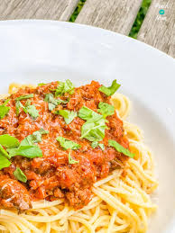
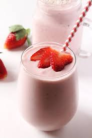

Asian Bò Bún 🍜Le bò bún, dont le nom vietnamien est bún bò nam bộ, originaire du sud du Vietnam, est une salade vietnamienne froide, composée de vermicelles de riz, garnie de bœuf sauté et de crudités. |
|
|  |
Italian Bolognese Pasta 🍝La sauce bolognaise (ou ragù alla bolognese) est une sauce très connue de la région de Bologne. Elle se cuisine essentiellement à base de coulis de tomate, d'oignon et de viande de bœuf. |
|  |
Strawberry Smoothie 🍓Un smoothie ou frappé aux fruits est un type de boisson réalisée à partir de fruits et des légumes mixés, parfois mélangés à des jus de fruits. Le terme anglais 'smoothie' insiste sur son onctuosité. |